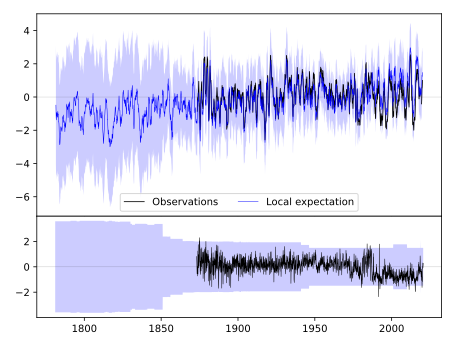
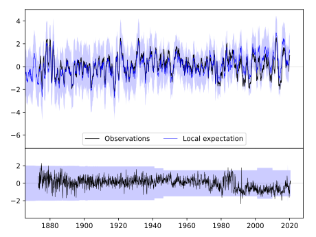
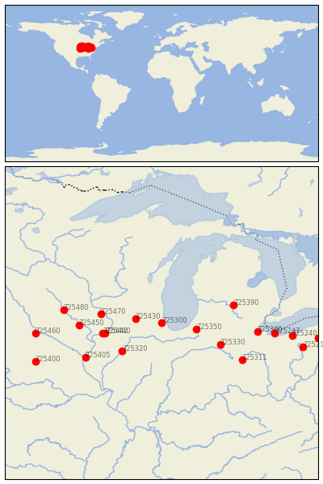

CHICAGO/0'HARE [USA]


| Neighbour | Name | Country | Distance | Lon/Lat | Years |
|---|
| 725300 | CHICAGO/0'HARE | USA | 0 | -87.9, 42.0 | 1873-2020 |
| 725430 | ROCKFORD/WSO-AP----- | USA--------- | 101 | -89.1, 42.2 | 1946-2020 |
| 725350 | SOUTH BEND/ST JOSEPH | USA | 136 | -86.3, 41.7 | 1941-2020 |
| 725320 | PEORIA | USA | 208 | -89.7, 40.7 | 1856-2020 |
| 725440 | MOLINE/QUAD CITY | USA | 222 | -90.5, 41.5 | 1929-2020 |
| 725442 | DAVENPORT | USA | 230 | -90.6, 41.5 | 1872-1980 |
| 725470 | DUBUQUE/MUN.,------- | USA--------- | 234 | -90.7, 42.4 | 1851-2020 |
| 725330 | FORT WAYNE | USA | 250 | -85.2, 41.0 | 1887-2020 |
| 725390 | LANSING------------- | USA--------- | 285 | -84.6, 42.8 | 1864-2020 |
| 725450 | CEDAR-RAPIDS/AP----- | USA--------- | 314 | -91.7, 41.9 | 1953-2020 |
| 725405 | KEOKUK | USA | 342 | -91.4, 40.4 | 1871-1980 |
| 725311 | SIDNEY | USA | 362 | -84.2, 40.3 | 1883-1980 |
| 725360 | TOLEDO | USA | 367 | -83.5, 41.6 | 1871-2020 |
| 725480 | WATERLOO/WSO-AP----- | USA--------- | 376 | -92.4, 42.6 | 1950-2020 |
| 725247 | SANDUSKY, OHIO | USA | 434 | -82.7, 41.5 | 1877-1990 |
| 725460 | DES MOINES, IOWA | USA | 484 | -93.7, 41.5 | 1878-2020 |
| 725240 | CLEVELAND/CLE------- | USA--------- | 502 | -81.9, 41.4 | 1947-2020 |
| 725400 | SPICKARD 7 W | USA | 525 | -93.7, 40.2 | 1893-2019 |
| 725210 | AKRON/AKRON-CANTON | USA | 555 | -81.4, 40.9 | 1948-2020 |
| 725250 | YOUNGSTOWN | USA | 603 | -80.7, 41.3 | 1943-2020 |